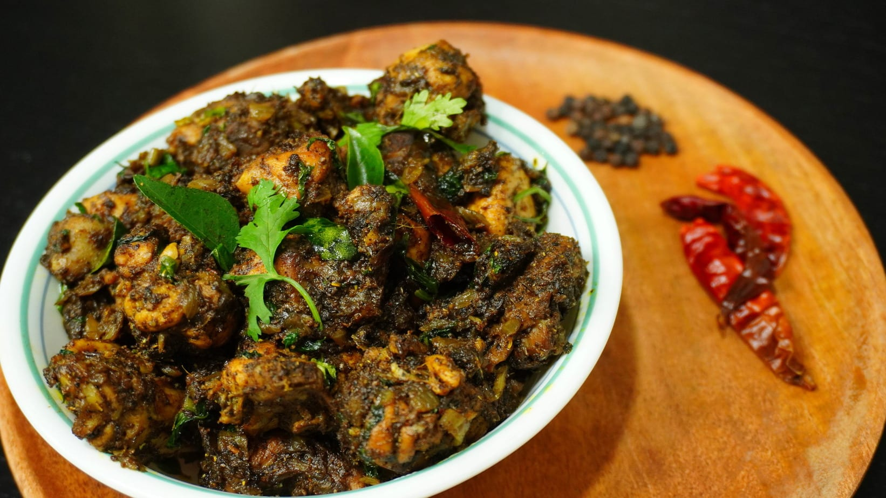

Pepper Chicken

Zesty Zing-a-Ling Pepper Chicken
This delightful dish will tickle your taste buds like never before. Succulent pieces of tender chicken are marinated in a tantalizing blend of spices, adding a burst of zest to every bite
Ingredients
- 1 kg (2.2 lbs) boneless chicken, cut into bite-sized pieces
- 2 tablespoons vegetable oil
- 1 large onion, finely chopped
- 4-5 garlic cloves, minced
- 1-inch piece of ginger, grated
- 2-3 green chilies, finely chopped (adjust according to your spice preference)
Steps
- Marinate chicken with yogurt, spices, and lemon juice. Chill for at least 1 hour.
- Sauté cumin seeds, mustard seeds, onions, garlic, and green chilies.
- Add marinated chicken and cook until slightly browned.
- Sprinkle freshly ground black pepper and crushed peppercorns on the chicken.
- Cook covered on medium-low heat for 10-15 minutes until chicken is tender.
- Optionally, add curry leaves for fragrance.
- Garnish with fresh coriander leaves and serve hot with lemon wedges. Enjoy with rice or naan!